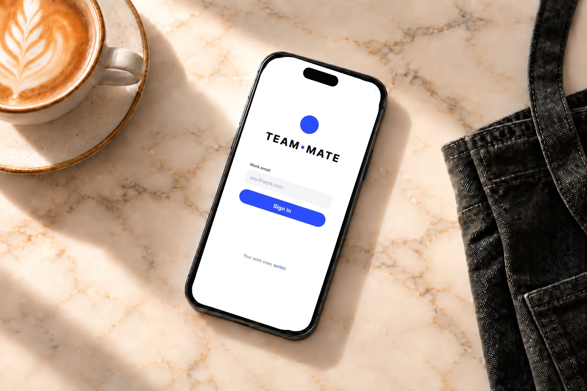

Your team. Your shifts.
Sorted.
Roster, clock-in and pay in one app. Built for crews, loved by managers.
Roster
Every shift, one calendar. Swaps in two taps.
Clock in
Transparent hours, down to the minute.
Pay
Hours and estimated pay, adding up as you work — no surprises.

At home on any shift.
Born in hospo, from the café counter to closing time, and just as at home on the shop floor, the building site, the clinic or the night patrol. See TEAM MATE for cafés, restaurants and bars, shops and retail or building sites and trades.

The staff app your crew will actually use.
New shifts appear the moment they're published — in the app and in your phone calendar. No printouts, no group-chat chaos.


- Open shifts — see extra shifts you're eligible for and claim them in a tap.
- Swaps — offer a shift to a teammate; managers approve in the app.
- Shift reminders — a nudge before each shift starts, and a "still clocked in?" one if you forget to clock off.
- Leave — check balances, request time off, track approvals.
- Announcements and tasks — read updates, confirm the important ones, tick off today's list.
- Handover notes — what the last shift wants the next one to know.
Run the whole roster from the web.
Set up in minutes with the welcome wizard — no implementation call, no sales demo.
- Build and publish rosters — your crew sees changes instantly.
- Approve timesheets and leave — from one queue, in seconds.
- Weekend, evening and public-holiday rates — set your rates once and pay adds them up for you.
- Export payroll files your payroll software can read — Xero-ready included.
- Forecast busy days — staff the rush, not the lull.
- Your compliance rules in one place — set them once, see them applied.
- You don't pay for managers — a seat is a person on the roster, not a login.
Free for your first 10 staff.
Actually free.
Not a trial. No card details, no locked features. One honest price when you grow past 10.
See pricingYour crew signs in from their pocket.
Employers set up TEAM MATE on the web and invite the team — everyone else just signs into the app with their work email. The staff app is coming to the App Store and Google Play.